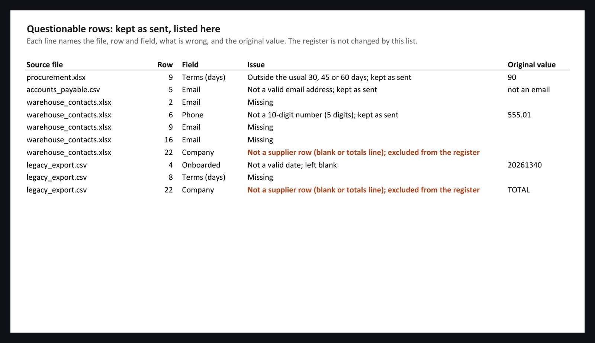
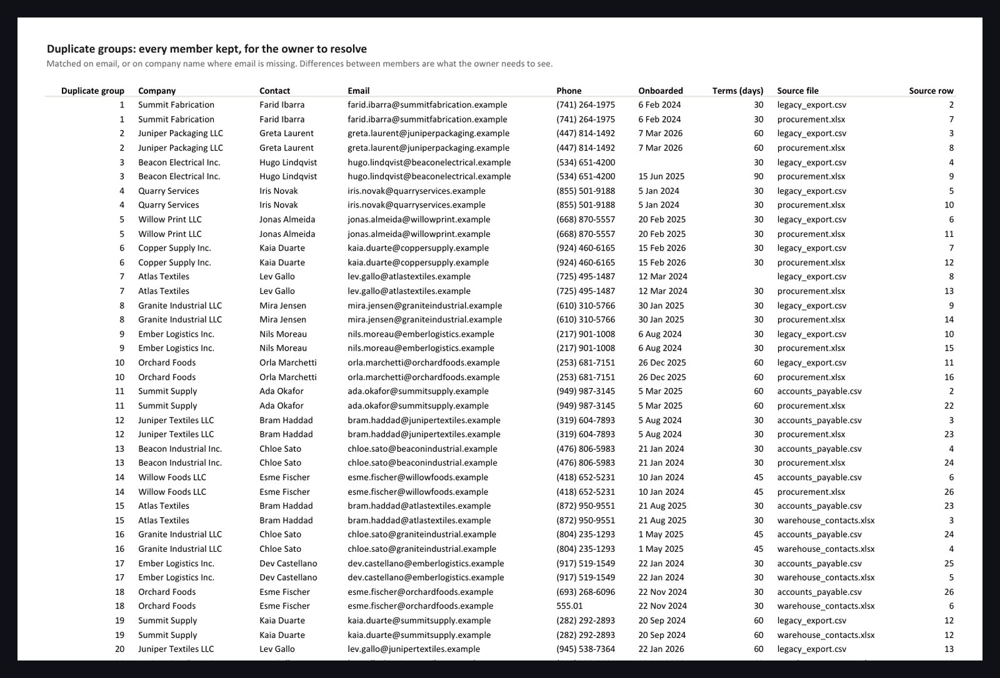

Data consolidation · Excel and CSV · sample deliverable
Four supplier lists become one register, and nothing disappears.
Four departments kept their own supplier lists. Two were Excel files and two were CSV exports, with different column names and orders, four date formats, five phone formats, all-caps company names in one, trailing spaces in another, category codes in a third, and a blank row and a totals line that were never meant to be data. This register merges them into one standard set of columns, keeps every row, and writes down everything it was unsure about. Duplicates are grouped and kept. Questionable values stay as sent and get logged.



What was standardised
- Column names came down to one set from four different vocabularies. Company names went from all-caps to title case, with "LLC" and "Inc." kept as written.
- Phones went to one format from five and dates to one from four. Payment terms written as "Net 30" or "30" became a number, category codes were expanded to names, and whitespace was trimmed.
What was not done
- No value was corrected by guessing. A phone with five digits stays as sent and is listed. A date that cannot be parsed is left blank and listed with the original text.
- No duplicate was resolved by the script. Which record wins is the owner's call, so both are shown.
How it is built
- There are five tabs: About, Register, Duplicates, Questionable and Sources. The Sources tab reconciles the counts, so rows read equals rows kept plus rows excluded for every file.
- The build ends with its own check. It fails if any row is lost, if any planted defect is missed, or if anything but the two junk lines was excluded.
Download the register and the four source files (procurement, accounts payable, warehouse, legacy export). Every company, person and number is invented.